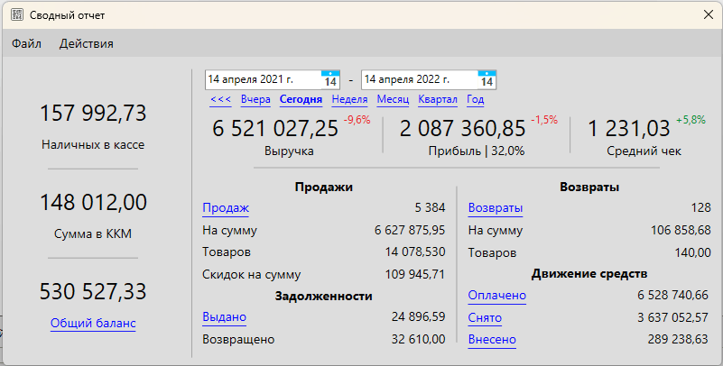
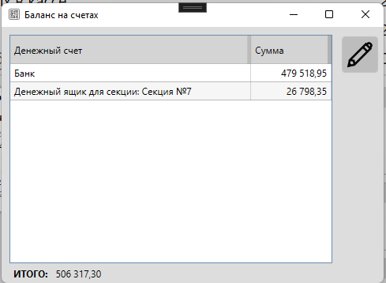
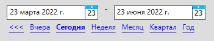
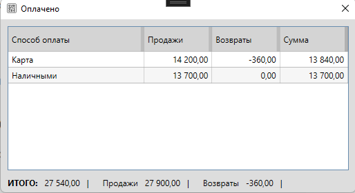

Описание раздела Отчеты – Сводный отчет, доступ к которому осуществляется из главной формы в меню: Отчеты – Сводный отчет.
Сводный отчет отображает информацию о текущем состоянии движения товаров и денежных средств в торговой точке с возможностью выбора конкретной даты или периода.
Информация в сводном отчете отображается суммарно по всем секциям. Т.е. это данные со всех компьютеров, подключенных к одной базе данных.
Для просмотра данных конкретной секции можно воспользоваться отчетом продавца.

Информация
Доступ для просмотра сводного отчета регулируется правами доступа
Меню
Описание пунктов меню сводного отчета.
Файл
- Обновить – обновление данных в сводном отчете
- Печатать – печать информации, отображаемой сводным отчетом
Действия
- Снять денежные средства – создание расхода денежных средств. Например, выемка наличности из кассы.
- Внести денежные средства – создание прихода денежных средств на счет, например, внесение размена в кассу.
- Переместить денежные средства – перемещение денежных средств, например, из кассы в сейф.
Полезные материалы
Текущий баланс
Информация о текущем состоянии денежных средств. Информация в данном разделе отображается на "сейчас" и не зависит от выбранной даты или периода. Т.е. это текущие значения сумм денежных средств.
Наличных в кассе
Это общая сумма наличных, которая должна быть в денежных ящиках всех секций.
Сумма в ККМ
Данный пункт отображается в том случае, если для печати чеков в настройках указан фискальный регистратор.
Значение этой суммы запрашивается у ККМ. Т.е. обычно та сумма, которая должна быть в денежном ящике текущей секции.
Важно
"Сумма в ККМ" может не совпадать с фактической суммой наличных в денежном ящике если, например, какой-то чек был проведен как нефискальный или не был напечатан.
"Сумма в ККМ" может не совпадать с суммой "Наличные в кассе", если к одной БД подключено несколько компьютеров, т.к. "Наличных в кассе" - это общая сумма по всем секциям.
Общий баланс
Отображает сумму баланса на всех счетах, которые настроены в программе, включая суммы наличных в денежных ящиках.
При клике на "Общий баланс" открывается окно для просмотра суммы на всех счетах с возможностью корректировки.

На скриншоте выше отображаются счета, которые созданы в программе и суммы по ним.
При нажатии на "редактировать" можно скорректировать сумму на счете, указав комментарий к действию.
Выбор периода

Сводный отчет можно посмотреть на конкретную дату или же за период.
Выберите начало и конец периода или нажмите на один из готовых периодов:
- вчера
- сегодня
- неделя
- месяц
- квартал
- год
После выбора периода данные в сводном отчете будут обновлены.
Внимание
Обратите внимание, что отчет формируется с учетом значения опции "Время начала смены", доступной в настройках программы.
Основные показатели
Информация о продажах за выбранную дату или период.
Для основных показателей отображается процентное изменение по сравнению с периодом, равным по длине и предшествующим выбранному.
Выручка
Под выручкой подразумевается сумма, полученная от покупателей при продаже товаров за вычетом суммы, возвращенной покупателям при возврате.
Прибыль
Под прибылью понимается разница выручки и суммы закупочных цен проданных товаров по методу FIFO (первый пришел, первый ушел).
Средний чек
Средний чек – это сумма продаж, поделенная на количество продаж.
Продажи
Информация о продажах за выбранную дату или период.
Всего продаж
Количество продаж (чеков), которые были совершены на выбранную дату или период.
При клике на "Всего продаж" откроется журнал продаж за выбранный период.
На сумму
Сумма продаж (чеков), которые были совершены на выбранную дату или период.
Всего товаров
Сумма количества товаров, которые были проданы за выбранную дату или период.
Скидок на сумму
Сумма всех скидок, сделанных за выбранную дату или период.
Полезные материалы
Возвраты
Информация о возвратах за выбранную дату или период.
Полезные материалы
Возвраты
Количество возвратов (чеков), который были выполнены за выбранную дату или период.
При клике на "Возвраты" откроется журнал выполненных возвратов за выбранную дату или период.
На сумму
Сумма стоимости товаров, которые были возвращены за выбранную дату или период.
Товаров
Сумма количества товаров, которые были возвращены за выбранную дату или период.
Движение средств
Информация о движении денежных средств за выбранную дату или период.
Создать или изменить категории снятий/внесений можно в настройках программы.
Полезные материалы
Всего оплачено
Сумма, полученная от покупателей за проданные товары, минус сумма сделанных возвратов. Включает в себя сумму возвращенных задолженностей.
При клике на "Всего оплачено" откроется окно для просмотра подробной информации об оплате по способам. Это позволяет посмотреть, какими способами и на какую сумму были совершены платежи в торговой точке (магазине, кафе) за выбранный период. Например, вы сможете увидеть, сколько платежей было наличными, картой за день, неделю, месяц или другой период.

В окне "Оплачено" отображаются суммы оплат, сгруппированные по способам. Суммы разделены на столбцы:
- Продажи – суммы, полученные по продажам, в т.ч. возвращенные задолженности
- Возвраты – суммы, возвращенные покупателям при возвратах товаров
- Сумма – итоговая сумма (продажи минус возвраты)
Также отображается общий итог оплат.
Снято
Сумма выемки (выдачи) денежных средств за выбранную дату или период. Включает в себя выемку наличных из кассы.
При клике на "снято" откроется журнал выемки денежных средств.
Внесено
Сумма внесений денежных средств за выбранную дату или период. Включает в себя внесения наличных в кассу.
При клике на "Внесено" отроется журнал внесения денежных средств.
Задолженности
Информация о задолженностях за выбранную дату или период.
Полезные материалы
Выдано
Сумма продаж (чеков), которые были оформлены в долг в выбранный период.
При клике на "Выдано" откроется список задолженностей за выбранный период.
Возвращено
Сумма денежных средств, которые были внесены по ранее выданным задолженностям в текущую дату или период.